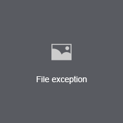

<template>
    <div class="h5-player">
        <div :if="@media_type == 2" class="img-panel" :mouseenter="@mouseenter" :mouseleave="@mouseleave">
            
            
            <div class="media-no-img" :if="!@src">
                
                <!-- 抱歉，由于网络、数据等原因，图片暂时无法查看 -->
                <span>{{@languageTxt.zfsypsjglpt.zfsypsjglpt_sypgl.sorryTips}}</span>
            </div>
            <div class="control-bar">
                <a :click="downloadClick" class="downloadBtn"
                    :attr="{title: @languageTxt.zfsypsjglpt.common.downloadTxt}">
                    
                </a>
            </div>
        </div>
        <div :if="@media_type != 2" style="width:100%; height:100%;">
            <ms-video :widget="{src: @src, special_id: @special_id, media_type: @media_type, downloadUrl:@downloadUrl}">
            </ms-video>
        </div>
    </div>
</template>